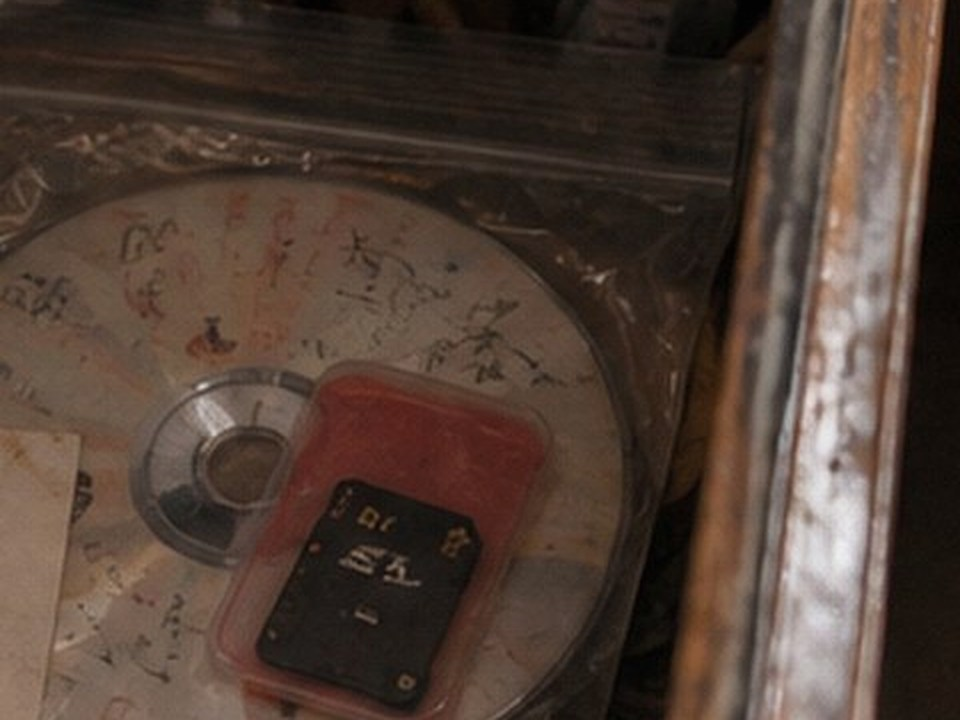
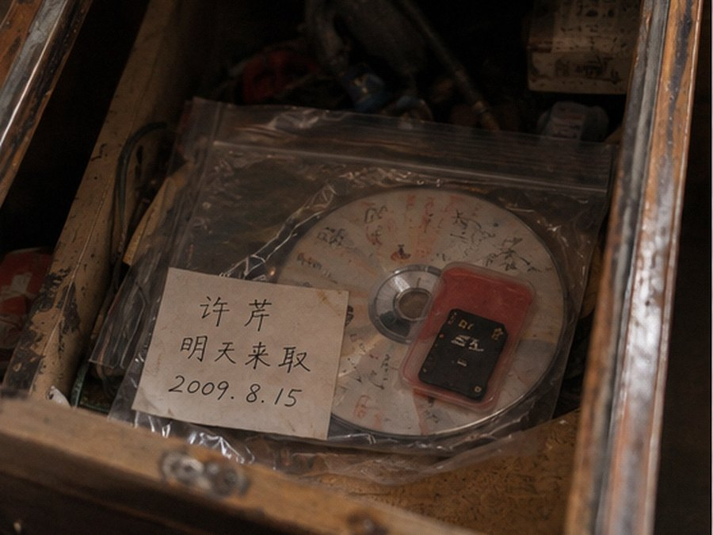

当前批次 闭店清仓 / 2026-09未认领物 1纸档 28照片 22张可核
| 编号 | 物件 | 发现位置 | 处理状态 |
|---|---|---|---|
| U-01 | 灰色围巾 | 2018冬季失物篮 | 已清理 |
| U-02 | 学生证卡套（无卡） | 旧打印机旁 | 无主信息 |
| U-03 | 单只钥匙 | 收银台后磁吸板 | 来源不足 |
| U-04 | 无封面刻录盘 + SD卡 | 旧柜台第二层抽屉 | 来源未登记暂不出售 |
- 编号
- —
- 物件
- —
- 来源说明
- —
- 处理状态
- —

图 U-04-1A · 首次登记局部；纸条仅能辨出姓氏首字“许”，其余被折痕遮挡。

图 U-04-1 · 来源核对后展开原始发现照。
- 袋面备注
- 姓氏首字可辨“许” / 第二字被折痕遮挡 / “明天来取”
- 旧编号
- K-0815-3
- 物件
- 无封面刻录盘一张，附SD卡及红色卡套
- 发现位置
- 旧柜台第二层抽屉
- 来源类型
- 处理意见
旧编号核对2009网站 / 业务栏目K-0815-3
旧业务查询已确认：U-04属于顾客相机卡转存/刻盘委托，暂不出售。展开登记照后，袋面姓名完整可辨为“许芹”。
附属物：SD卡（8个JPEG） 打开只读副本
附属物：SD卡（8个JPEG） 打开只读副本
来源页：2013-08-22 河西生活网存档帖。四条发言已转录到下表，原帖保留完整上下文。 查看来源页
| 原帖用户 | 原帖位置 | 来源层级 |
|---|---|---|
| 山城的风 | 原帖内 / 1楼 | |
| 盐汽水 | 原帖内 / 2楼 | |
| 北桥修鞋 | 原帖内 / 3楼 | |
| 老黑VCD | 原帖内 / 4楼 |
引用来源字段已保存。
外部资料引用
由本机引用字段生成| 来源 | 索引字段 | 本地入口 |
|---|---|---|
| THREAD-20130822 / 5、8楼 | 2009年8月中旬 / 社会版 / 许芹 | 河西晚报数字报目录 |
这里只保存论坛正文中已经出现的报刊引用，不把论坛说法写成事实。
地方资料匹配
日期 / 地点字段一致| 检索条件 | 本机目录 | 入口 |
|---|---|---|
| 2009-08-15 / 城南施工路段 | road_bundle / 3份文字 + 1张图件 | 打开道路资料 |
道路资料来自本机地方资料目录，与SD卡原始文件分开保存。
同期清点
不影响U-04| 位置 | 物件 | 处理 |
|---|---|---|
| 后墙卷筒 | 2007暑期放映海报 | 店史留样 |
| 玻璃柜三格 | 注销会员卡一盒 | 保留一张样本 |
| 门口纸箱 | 无盒游戏光盘17张 | 废品登记 |
最近处理记录
本机 / 09-23| 时间 | 类型 | 名称 | 来源 | 状态 |
|---|---|---|---|---|
| 16:42 | 照片 | 南街旧照11张 | 顾客相册 | 已导入 |
| 15:18 | 纸档 | 2017缩店清点页 | 打印柜 | 已转录 |
| 14:56 | 业务单 | 旧刻盘登记簿 | 柜台抽屉 | 待复核 |
| 13:21 | 照片 | 门口黄狗 / 2张 | 老顾客投稿 | 年份待补 |